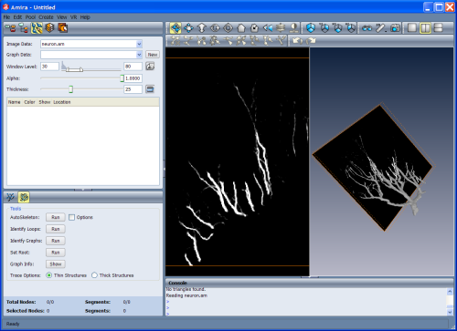

The Filament Editor immediately after the image data has been loaded.
The left-hand panel of the viewer shows a 2D slice of the volume, while the
right-hand panel shows the 3D objects. The 3D and slice rendering have
been activated in the 3D viewer.